File: 000180.gt.txt (if the image is defective, simply delete all Arabic text and the line will be excluded)
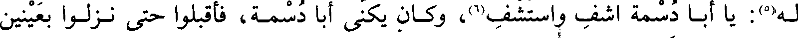
له(5): يا أبا دسمة أشف واستشف(6)، وكان يكنى أبا دسمة، فأقبلوا حتى نزلوا بعينين
File: 000181.gt.txt (if the image is defective, simply delete all Arabic text and the line will be excluded)
بجبل ببطن السبخة، من قناة على شفير الوادي، مما يلي المدينة.
File: 000182.gt.txt (if the image is defective, simply delete all Arabic text and the line will be excluded)
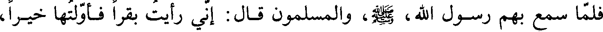
فلما سمع بهم رسول الله، صلعم، والمسلمون قال: إني رأيت بقرا فأولتها خيرا،
File: 000183.gt.txt (if the image is defective, simply delete all Arabic text and the line will be excluded)
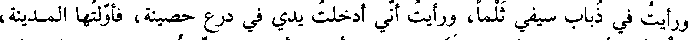
ورأيت في ذباب سيفي ثلما، ورأيت أني أدخلت يدي في درع حصينة، فأولتها المدينة،
File: 000184.gt.txt (if the image is defective, simply delete all Arabic text and the line will be excluded)
فإن رأيتم أن تقيموا بالمدينة وتدعوهم، فإن أقاموا أقاموا بشر [مقام]، وإن دخلوا علينا
File: 000185.gt.txt (if the image is defective, simply delete all Arabic text and the line will be excluded)
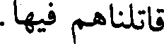
قاتلناهم فيها.
File: 000186.gt.txt (if the image is defective, simply delete all Arabic text and the line will be excluded)
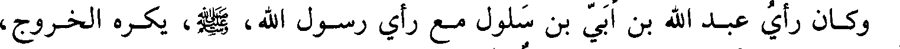
وكان رأي عبد الله بن أبي بن سلول مع رأي رسول الله، صلعم، يكره الخروج،
File: 000187.gt.txt (if the image is defective, simply delete all Arabic text and the line will be excluded)
وأشار بالخروج، وأشار بالخروج جماعة ممن استشهد يومئذ(1).
File: 000188.gt.txt (if the image is defective, simply delete all Arabic text and the line will be excluded)
وأقامت قريش يوم الأربعاء والخميس والجمعة، وخرج رسول الله، صلعم، حين
File: 000189.gt.txt (if the image is defective, simply delete all Arabic text and the line will be excluded)
صلى الجمعة، فالتقوا يوم السبت نصف شوال. فلما لبس رسول، صلعم، سلاحه
File: 000190.gt.txt (if the image is defective, simply delete all Arabic text and the line will be excluded)
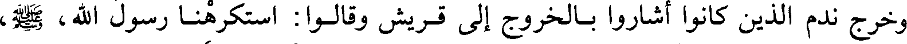
وخرج ندم الذين كانوا أشاروا بالخروج إلى قريش وقالوا استكرهنا رسول الله، صلعم،
File: 000191.gt.txt (if the image is defective, simply delete all Arabic text and the line will be excluded)
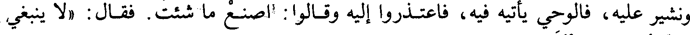
ونشير عليه، فالوحي يأتيه فيه، فاعتذروا إليه وقالوا: اصنع ما شئت. فقال «لا ينبغي
File: 000192.gt.txt (if the image is defective, simply delete all Arabic text and the line will be excluded)
لنبي أن يلبس لأمته فيضعها حتى يقاتل»(2).
File: 000193.gt.txt (if the image is defective, simply delete all Arabic text and the line will be excluded)
فخرج في ألف رجل، واستخلف على المدينة ابن أم مكتوم، فلما كان بين المدينة
File: 000194.gt.txt (if the image is defective, simply delete all Arabic text and the line will be excluded)
وأحد، عاد عبد الله بن أبي بثلث الناس، فقال: أطاعهم وعصاني، وكان من تبعه أهل
File: 000195.gt.txt (if the image is defective, simply delete all Arabic text and the line will be excluded)
النفاق والريب، واتبعهم عبد الله بن حرام أخو بني سلمة، يذكرهم الله أن لا يخذلوا
File: 000196.gt.txt (if the image is defective, simply delete all Arabic text and the line will be excluded)
نبيهم، فقالوا: لو نلم أنكم تقاتلون ما أسلمناكم، وانصرفوا. فقال: أبعدكم الله أعداء
File: 000197.gt.txt (if the image is defective, simply delete all Arabic text and the line will be excluded)
الله! فسيغني الله عنكم(3).
File: 000198.gt.txt (if the image is defective, simply delete all Arabic text and the line will be excluded)
وبقي رسول الله، صلعم، في سبعمائة، فسار في حرة بني حارثة وبين أموالهم، فمر
File: 000199.gt.txt (if the image is defective, simply delete all Arabic text and the line will be excluded)
بمال رجل من المنافقين، يقال له مربع بن يقظى(4)، وكان ضرير البصر، فلما سمع حس
File: 000200.gt.txt (if the image is defective, simply delete all Arabic text and the line will be excluded)
رسول الله، صلعم، ومن معه قام يحثي التراب في وجوههم ويقول: إن كنت رسول الله،
File: 000201.gt.txt (if the image is defective, simply delete all Arabic text and the line will be excluded)
فإني لا أحل لك أن تدخل حائطي، واخذ حفنة من تراب في يده وقال: لو أعلم أني لا
File: 000202.gt.txt (if the image is defective, simply delete all Arabic text and the line will be excluded)
أصيب غيرك لضربت به وجهك. فابتدروه ليقتلوه، فقال النبي، صلعم: لا تفعلوا، فهذا
File: 000203.gt.txt (if the image is defective, simply delete all Arabic text and the line will be excluded)
الأعمى أعمى البصر والقلب. فضربه سعد بن زيد بقوس فشجه(5).
File: 000204.gt.txt (if the image is defective, simply delete all Arabic text and the line will be excluded)
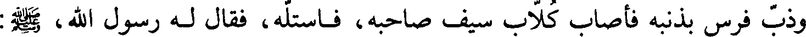
وذب فرس بذنبه فأصاب كلاب سيف صاحبه، فاستله، فقال له رسول الله، صلعم:
File: 000205.gt.txt (if the image is defective, simply delete all Arabic text and the line will be excluded)
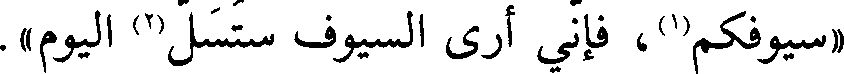
«سيوفكم(1)، فإني أرى السيوف ستسل(2) اليوم».
File: 000206.gt.txt (if the image is defective, simply delete all Arabic text and the line will be excluded)
وسار رسول الله، صلعم، حتى نزل بعدوة الوادي، وجعل ظهره وعسكره إلى أحد(3).
File: 000207.gt.txt (if the image is defective, simply delete all Arabic text and the line will be excluded)
وكان المشركون ثلاثة آلاف، منهم سبعمائة دارع، والخيل مائتي فرس، والظعن
File: 000208.gt.txt (if the image is defective, simply delete all Arabic text and the line will be excluded)
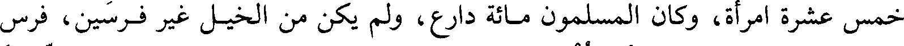
خمس عشرة امرأة، وكان المسلمون مائة دارع، ولم يكن من الخيل غير فرسين فرس
File: 000209.gt.txt (if the image is defective, simply delete all Arabic text and the line will be excluded)
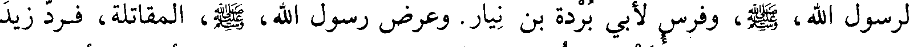
لرسول الله، صلعم، وفرس لأبي بردة بن نيار. وعرض رسول الله، صلعم، المقاتلة، فرد زيد
To Save: `Ctrl+s`, make sure to choose `Webpage, complete`!